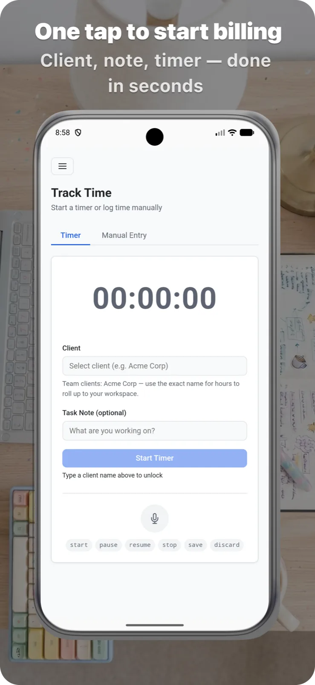
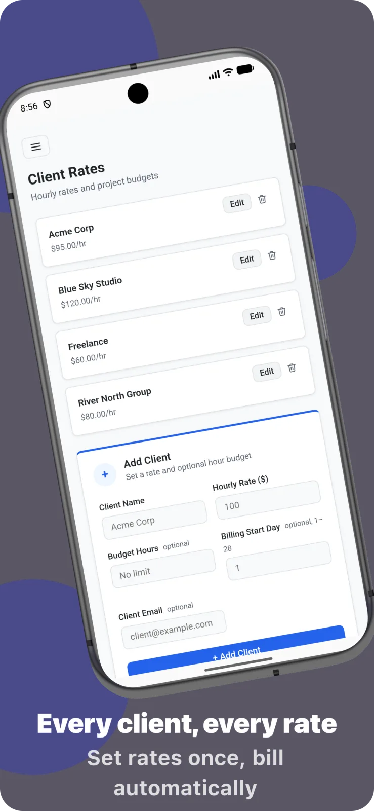
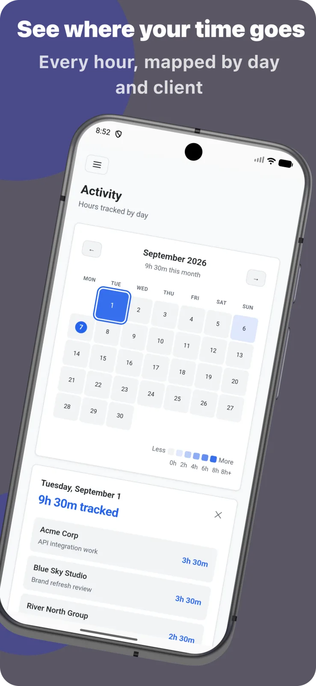
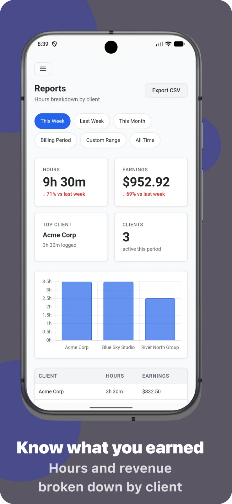
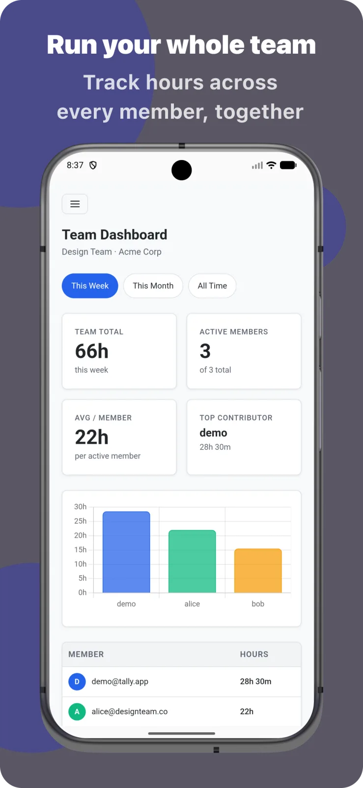
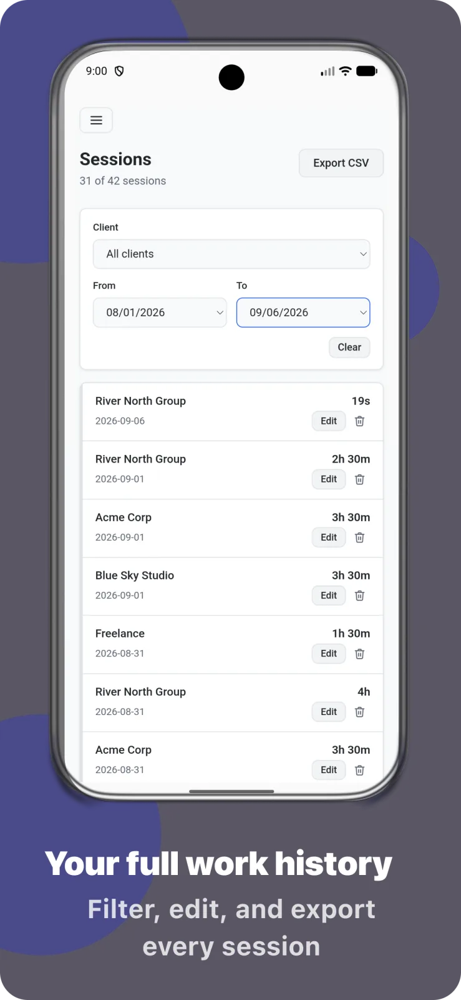
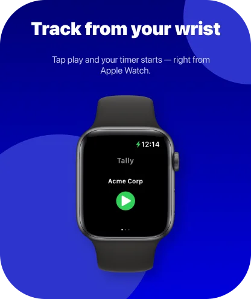
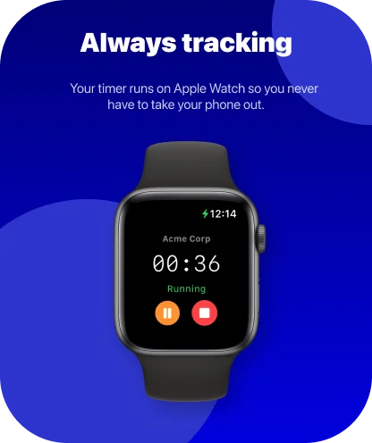
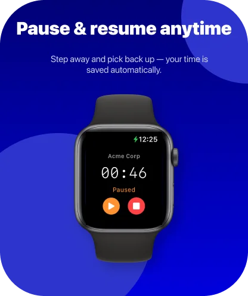

Tally - Time Tracker
A time tracker for freelancers and small teams — native iPhone, Apple Watch, and Mac apps, a web dashboard, and an Android beta, all on one backend. Designed, built, and shipped solo.
The Problem
At the Apple Developer Academy, I was on a team of five building for a real client. We needed one place where all five of us could log hours, stay in sync, and show the client what we'd actually worked on. Every tool we tried was either built for solo freelancers with no team layer, or bloated enterprise software that cost more than the project was worth.
Tally is the tool we needed: it works for one person or a whole team, runs on the devices people already use, and doesn't charge a subscription just to log hours.
On the Web
The marketing site and web dashboard are React + Vite on Vercel, with a live demo account that reseeds itself nightly.
On Your Phone
Native SwiftUI on iPhone, and the same account on Android through a Capacitor build of the web app.
Landing page - mobile layout
iOS App

Timer

Client picker

Reports

Invoicing

Goals

Activity

Team
Android Beta

Track Time

Client Rates

Activity

Reports

Team Dashboard

Sessions
Architecture
Platforms. Native SwiftUI apps for iPhone, Apple Watch, and Mac (a true macOS target, not Catalyst), a React web dashboard, and a Capacitor Android app — all on one Supabase backend. A visionOS version is in development.
Payments. StoreKit, Google Play Billing, and Stripe all feed one Supabase subscriptions table — no third-party billing service. Writes are server-only — Stripe through a webhook, App Store purchases verified against Apple's signature by an Edge Function — so a client can't grant itself Pro. Universal Purchase means one App Store payment covers iPhone and Mac.
Push notifications. A Supabase Edge Function delivers through APNs and Firebase Cloud Messaging — signing an ES256 JWT per request, routing sandbox vs. production, and pruning dead tokens. Permission is requested after the first tracked session rather than at launch, and a device's token is removed on sign-out.
Automated email. A Monday digest with each user's hours, and a re-engagement email for users who've gone quiet — both Vercel cron jobs sending through Resend, with signed one-click unsubscribe links.
How It Works
Free to start, Pro for $9.99 one-time (unlimited clients and full history), or Business for $4.99/month (teams, invoicing, and Stripe payments).
- Timer with pause/resume, or log hours by duration or start–end time
- Weekly goals per client, budgets that turn red when exceeded, and streaks
- Reports, an activity calendar, and CSV export with times, team, rate, and amount
- Invoices from billable hours, paid through Stripe Connect straight into the freelancer's own account
- Team workspaces with owner/admin/member roles enforced by row-level security, not just the UI
- Sign in with email, Apple, or Google; voice control and keyboard shortcuts on the web
iOS Integration

Lock screen Live Activity
A Live Activity keeps the running timer on the Lock Screen and Dynamic Island, widgets show today's hours, Siri can start and stop timers, and a Focus filter switches Tally to your work client automatically.

Apple Watch
Start, pause, and stop a timer from your wrist — no phone needed. When you stop, the session syncs to your iPhone and every other device.

Tap to start

Timer running

Pause & resume
iPad
The iPad layout uses the extra space for a persistent sidebar — Timer, Reports, Activity, and Team are always one tap away without covering the main view.


Native macOS App
A fully native macOS target — not Catalyst — with Mac patterns throughout: sidebar navigation, right-click to edit or delete sessions, and Mac-specific sign-in (Apple and email; Google has no Mac SDK).
Mac and iOS share the same SwiftUI source, with iOS-only APIs excluded by #if os(iOS) guards. A shared bundle ID enables Universal Purchase: buy on iPhone, unlocked on Mac.

Engineering Practices
- CI — GitHub Actions builds the iPhone, Mac, and visionOS apps and lints and builds the web app on every push
- Local backend — a full Supabase stack runs in Docker with seeded test accounts, so testing never touches production
- Versioned database — schema changes ship as migrations, tested locally before they reach production
- Releases — every App Store version is tagged with notes on GitHub; Dependabot keeps dependencies current
- Privacy — analytics load only after consent, and every marketing email has one-click unsubscribe
What Was Hard
My first cross-platform project: iOS, watchOS, Mac, web, and Android all reading and writing one backend, so every layer has to be right at once.
Payments were the hardest part: three stores feeding one subscription record, written only by the server so nobody can grant themselves Pro. Getting through App Review took nearly 10 rejections, each for a different guideline, before it shipped.
The native Mac target shares iOS source, so iOS-only APIs had to be guarded across dozens of views, and Mac needed its own sign-in flow because Google Sign-In has no Mac SDK.
User Research
After launch, I manually reviewed the email addresses of users who had created accounts and reached out to 30 of them directly. Most didn't respond — but one did: a senior product designer who has become an ongoing collaborator and the clearest signal I have of who Tally is really for.
Her feedback drove concrete product decisions:
- Billing cycles per client — she bills different clients on different schedules. I added monthly (by day of month) and weekly (by weekday) billing cycles, plus a "Last Billing Period" button on invoices that auto-fills the correct date range.
- Client settings in the Account tab — she wanted rates and billing cycles accessible without leaving the main app flow. I moved Client Settings into the Account tab with TipKit contextual tips on first use.
- Invoice persistence — name, email, and tax rate now persist across invoices so she isn't re-entering the same info every time.
- Billing cycle reminder notifications — a daily push fires at the start of each billing period ("Time to invoice Acme Corp.") so she never misses an invoice window.

One respondent who explains their workflow is worth more than a hundred survey answers.
Tally for Apple Vision Pro
Open Tally as a volume and it floats alongside your work — a live timer you can see without switching apps. Tap to pause, tap to resume. Your client hours tracked without breaking focus. Part of my work at the Apple Developer Academy.
Learn more ↗
The Outcome
Nearly 300 downloads and 63K+ App Store impressions since launch — built and shipped solo. Tally is live on the App Store for iPhone and Mac and in beta on Google Play, with one account across all of them.
It's the most complex thing I've built — not because any single piece is hard, but because five platforms, two payment systems, and a shared backend all have to be correct at once. It all has to work, and it does.